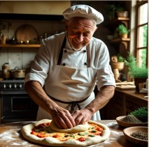

Sobre nós
Somos apaixonados pela culinária italiana, unindo ingredientes frescos, técnicas tradicionais e muita história desde 2010.
Nossa missão
Proporcionar experiências gastronômicas italianas autênticas com atendimento acolhedor.
Horários
Seg a Sex: 11h às 23h — Sáb e Dom: 12h às 00h
Contato
WhatsApp: (11) 99999-9999 • Email: contato@menuitaliano.com
Nossa História
- 2010 – Abertura da primeira unidade em São Paulo.
- 2015 – Prêmio de melhor pizza artesanal.
- 2020 – Lançamento do cardápio degustação.
Nosso Chef
Chef Luigi, formado na tradicional Escola de Gastronomia de Roma, com mais de 20 anos de experiência.